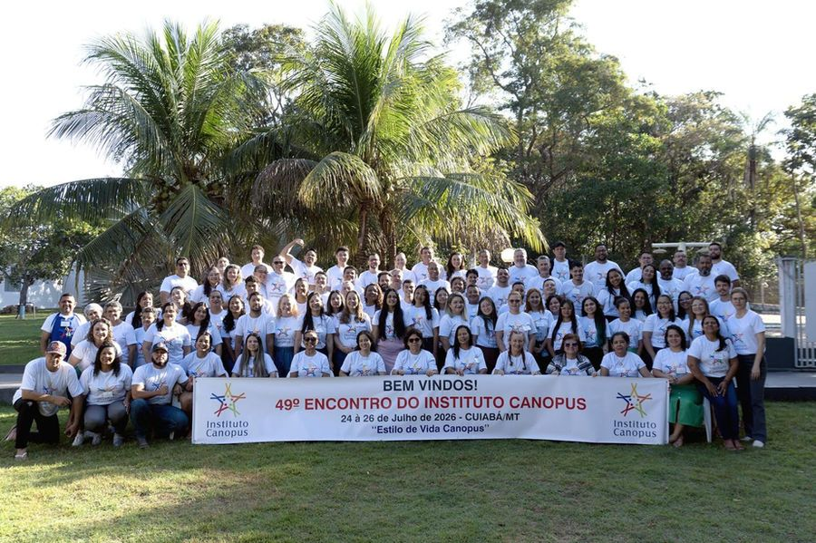
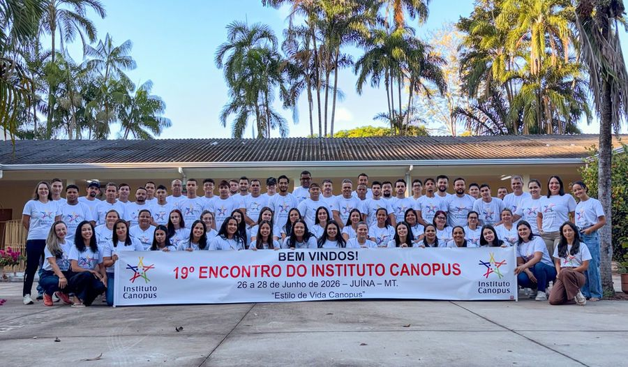

Notícias do Instituto Canopus

2º Encontro Estilo de Vida Canopus reúne 41 participantes em Teresina
Teresina (PI) recebeu a segunda edição do Encontro, reunindo 41 participantes e 15 voluntários em uma experiência de reflexão e desenvolvimento humano.
15 de set.
3º Encontro Estilo de Vida Canopus reúne 48 participantes em Recife
A edição reuniu 48 participantes e 20 voluntários em Recife, com experiências de reflexão, desenvolvimento humano e construção de vínculos.
15 de set.
49º Encontro Estilo de Vida Canopus celebra uma trajetória de conexões e transformação em Cuiabá
Cuiabá recebeu 64 participantes e 22 voluntários em três dias de convivência, reflexão e desenvolvimento humano.
15 de set.
1º Encontro Estilo de Vida Canopus promove conexão e desenvolvimento humano em João Pessoa
A edição inaugural em João Pessoa reuniu 29 participantes e 17 voluntários em três dias de convivência, reflexão e descobertas.
15 de set.
19º Encontro Estilo de Vida Canopus reúne participantes e voluntários em Juína
Juína (MT) recebeu 37 participantes e 18 voluntários em três dias de desenvolvimento humano, convivência e novas perspectivas.
15 de set.
Instituto Canopus destina R$ 1 milhão para apoiar vítimas dos terremotos na Venezuela
O Instituto Canopus destinou R$ 1 milhão à campanha SOS Venezuela para apoiar as famílias atingidas pelos terremotos registrados no país.
13 de ago.